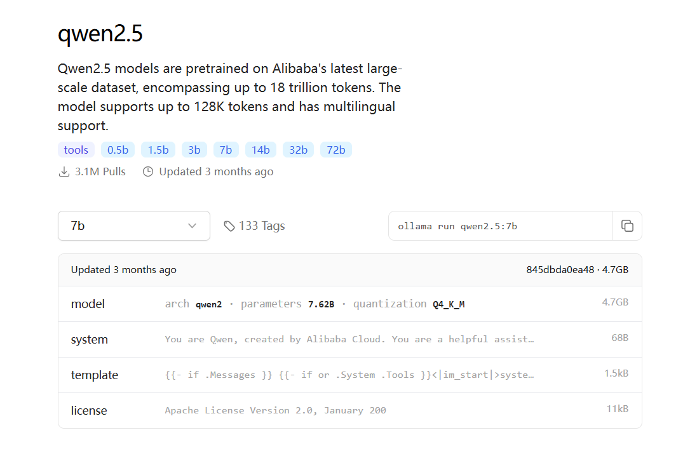
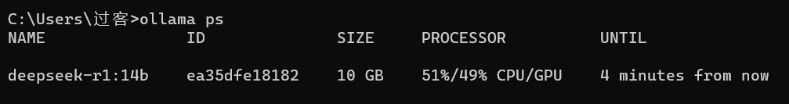
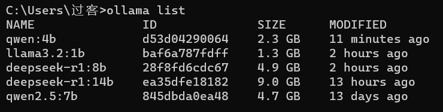
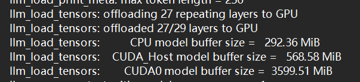
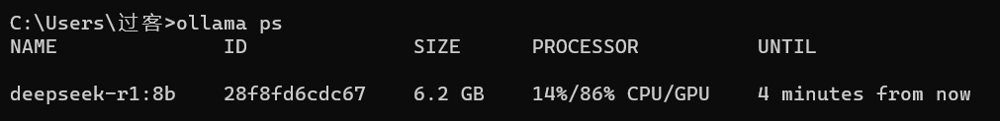

借助ollama本地运行各种开源大模型
通义千问算是我最喜欢的国内大模型了，比豆包出来早，而且还有开源版本，今天在本地跑了最新的qwen2.5。我选择的是ollama工具，windows环境即可，步骤很简单，如下所示。
下载安装ollama
官方网站的下载链接为：https://ollama.com/download/OllamaSetup.exe,但是这个下载链接在国内下载速度简直是龟速，我试了科学上网也不行。
我的办法是去github上下载：https://github.com/ollama/ollama/releases，在assets中下载自己需要的版本即可，我想在windows下直接运行，因此下载的是https://github.com/ollama/ollama/releases/download/v0.5.4/OllamaSetup.exe。
ollama安装以及后续的模型下载都默认在c盘（可以通过设置环境变量修改，建议先修改，方法见后文），因此需要留有一定的空间（我下载的7b参数的qwen2.5大概需要5个G）。安装好之后ollama是开机默认启动的，可以在任务管理器-启动应用中将其禁用，毕竟我也不是每天都要玩这个的。
下载模型
安装好ollama后，就可以选择模型来玩了。我的笔记本电脑显卡为2060，因此我选择的是7b参数的qwen2.5，再大我的本地性能就不支持了。在ollama的官方网站可以搜索自己需要的模型版本。

在命令行输入ollama run qwen2.5:7b即可运行7b参数的千问2.5。第一次执行这个命令时会自动下载模型，下载速度还可以接受：

然而到了最后百分之二，下载速度又变得很慢，一两分钟的事又变成了十几分钟，我选择耐着性子等它下载…（后续多次下载模型后我发现这个降速跟网络有很大关系，只要你的网络足够快，降速后依然能保持可以接受的速度，以及降速后切换网络能够提速。）

下载好后就可以开始在命令行play了，实测以我性能并不算强的2060，响应速度还是很快的，本地运行大概只需要5g的显存。/help显示帮助信息，/bye退出模型以及其它ollama命令就不赘述了。

后续会看看其它的部署方式以及如何微调。
试试Deepseek-r1以及其它模型
最近又一款国产开源大模型很火，就是Deepseek-r1，于是我又很想本地部署玩一下。ollama模型的默认下载位置在c盘，这样下不了几个模型c盘内存就不够了（嗯，下一台电脑就不分区了，可以省去很多麻烦）。解决方案是设置系统变量 OLLAMA_MODELS为自己想要的文件夹就可以了，后续会下载到这个文件夹中。那如果我已经下载到c盘了，可以直接把用户文件夹中.ollama\models中的两个文件夹直接移动过来，实测没有问题，可以通过ollama list验证。
鉴于7b的qwen2.5运行非常流畅，于是我决定尝试一下14b的deepseek-r1。结论是可以正常使用，但是速度比较慢，观感还是稍差。

通过ollama ps命令查看到gpu只能承担一半左右的工作，看来14b的模型对我的显存来说还是有点高了，换成8b的deepseek-r1就流畅多了，类似于7b的qwen2.5。这个模型会显示思考的过程，还是非常有趣的。

之后我又尝试了其它一下模型，通过查看日志（server.log）

或者ollama ps命令
可以看到8b的模型86%的工作由gpu承担,4b，1b这样的小模型是完全使用gpu的。由于我现在这台电脑显存的限制，后续会看看量化版本的大模型。